| Cenere® |
Bignè alla cremaOrigini
Raccontare la storia dei bignè equivale a raccontare quella della pasta choux. Questo impasto di acqua,
farina, uova e burro lavorati a caldo pare sia stato creato nella Firenze del XVI secolo dal cuoco Penterelli,
allora al servizio di Caterina de’ Medici, e migliorato dal suo successore Popelini. Ricetta
IngredientiPer la pasta choux
Per la crema
Per decorare
Preparazione dei Bignè alla CremaPasta ChouxIn una piccola casseruola portate a bollore l’acqua, il burro e il sale. Fuori dal fuoco unite la farina setacciata tutta in una volta e mescolate con una frusta, quindi rimettete la pentola sul fuoco e fate cuocere mescolando con un cucchiaio di legno per far asciugare il composto.
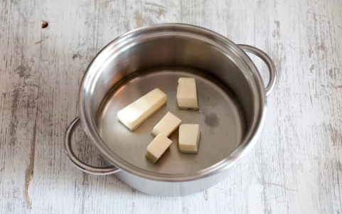 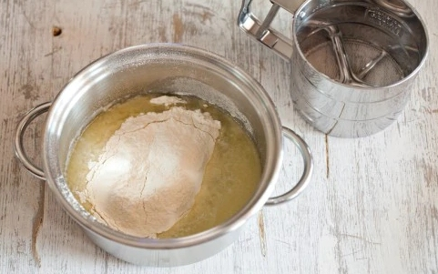 Quando sentirete la pasta sfrigolare ritirate, trasferite in una ciotola e lasciate raffreddare. Utilizzando la planetaria con la frusta (o uno sbattitore elettrico) incorporate le uova, una alla volta.
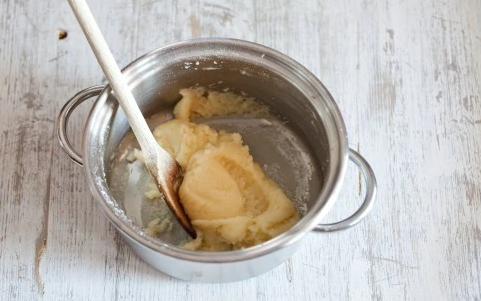 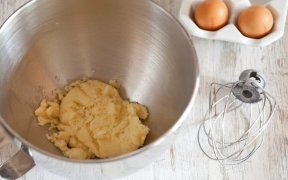
Continuate a lavorare fino a quando otterrete un composto omogeneo e colloso, che scende a nastro.
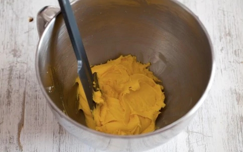 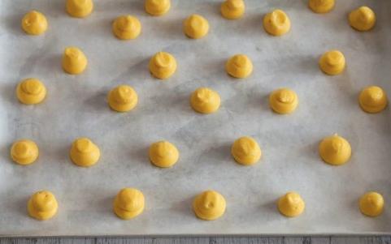 Cottura
Fateli cuocere nel forno già caldo a 180° fino a leggera colorazione per circa 25-30 minuti.
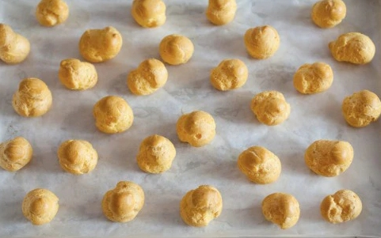 Crema Pasticcera
In una casseruola lavorate i tuorli con lo zucchero, usando una frusta. Aggiungete a poco a poco la farina,
senza smettere di mescolare finché il composto risulta amalgamato.
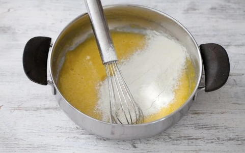 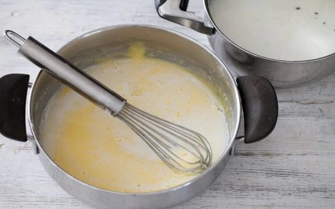
Ponete sul fuoco, continuate a mescolare, fate sobbollire per 3-4 minuti.
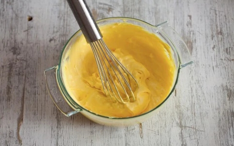 Trasferite la crema in una sac à poche con bocchetta stretta e utilizzatela per farcire i bigné tagliandoli a 3/4 in modo da eliminare la calottina, oppure praticando un piccolo foro sul fondo.
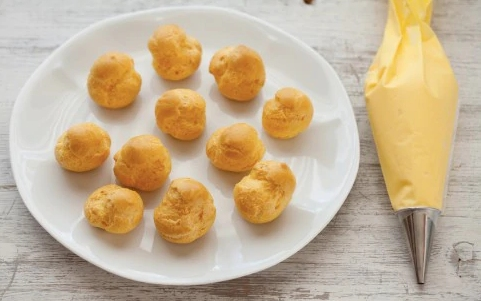 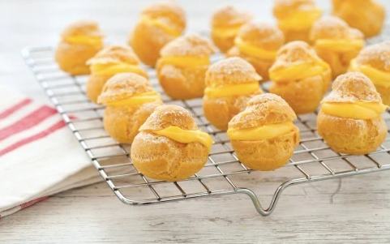 Spolverizzate con zucchero a velo e servite.
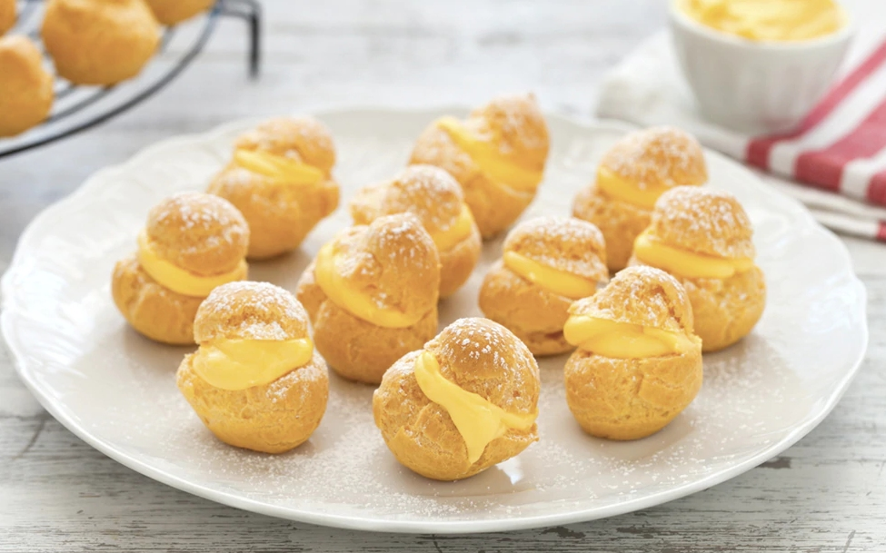 Conservazione
La pasta choux cruda va utilizzata subito; non è possibile prepararla in anticipo. |